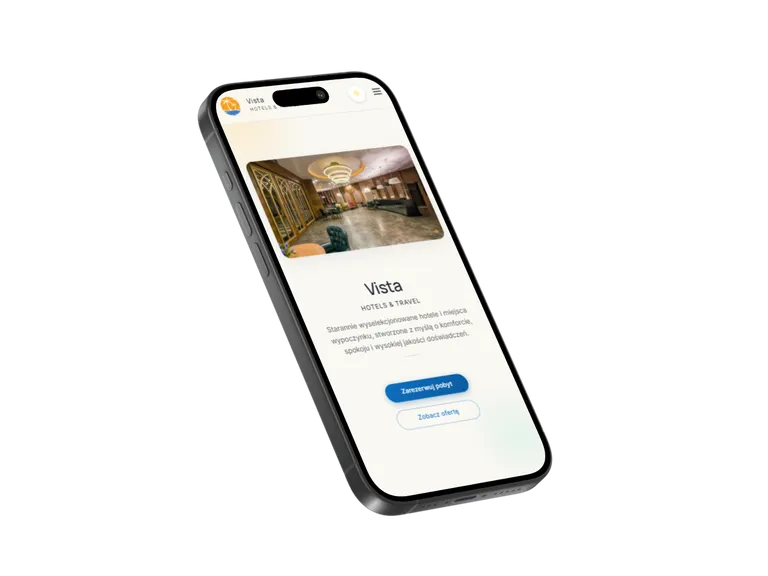
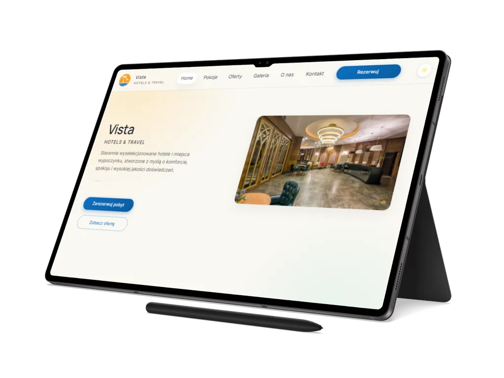

01
Vista
Wielostronicowy front-end serwisu hotelowo-podróżniczego, który łączy ofertę pokoi, galerię, kontakt i rezerwację z warstwą PWA oraz przygotowaniem do publikacji statycznej.
Przegląd projektu
Vista pokazuje kompletny zakres statycznego serwisu hospitality/travel: od strony głównej, pokoi i ofert po galerię, kontakt, strony prawne, PWA i pipeline assetów.
Projekt został przygotowany jako referencyjna realizacja portfolio, z naciskiem na wielostronicową strukturę, interakcje po stronie klienta, dostępność, SEO, wydajność i przewidywalne wdrożenie statyczne.
Zakres obejmuje komplet stron publicznych, w tym stronę główną, pokoje, oferty, galerię, kontakt oraz strony prawne. Dzięki temu Vista nie jest pojedynczym landingiem, tylko uporządkowanym serwisem dla marki hotelowo-podróżniczej.
Warstwa interakcji obejmuje aktywne stany nawigacji, menu mobilne, tryb light/dark/auto z zapisem preferencji, filtrowanie pokoi i galerii, lightbox z obsługą klawiatury, formularz kontaktowo-rezerwacyjny oraz mapę z fallbackiem statycznym.
StronyBiznesTurystykaHospitality
Zakres i akcenty
Case study koncentruje się na praktycznych elementach serwisu hospitality: prezentacji pokoi, ścieżce kontaktowo-rezerwacyjnej oraz standardzie technicznym wdrożenia.
02
Formularz, filtry i lightbox
03
SEO, PWA i Netlify deploy
Technologie i standard
Vista został zbudowany w czystym HTML, CSS i JavaScript, z procesem buildowym, optymalizacją obrazów, testami dostępności i przygotowaniem do hostingu statycznego.
Warstwa runtime opiera się na HTML5, CSS3 i JavaScript ES Modules. Style są
organizowane w modułach tokens, base,
layout i components, a funkcje UI w katalogu
js/features.
- PostCSS, esbuild i sharp obsługują build CSS/JS oraz optymalizację obrazów,
-
JSON-LD może być dynamicznie podmieniany z plików
assets/seo/*.json, -
QA obejmuje Playwright + axe-core, skrypt
a11y-axe.mjsi kontrolę linków.


Dalszy krok
Zobacz wielostronicowy serwis Vista albo wróć do pełnego portfolio.
Vista pokazuje zakres pracy nad statycznym front-endem hospitality: od pokoi, ofert, galerii i formularza po SEO, PWA, dostępność, cache offline i przygotowanie projektu do publikacji.